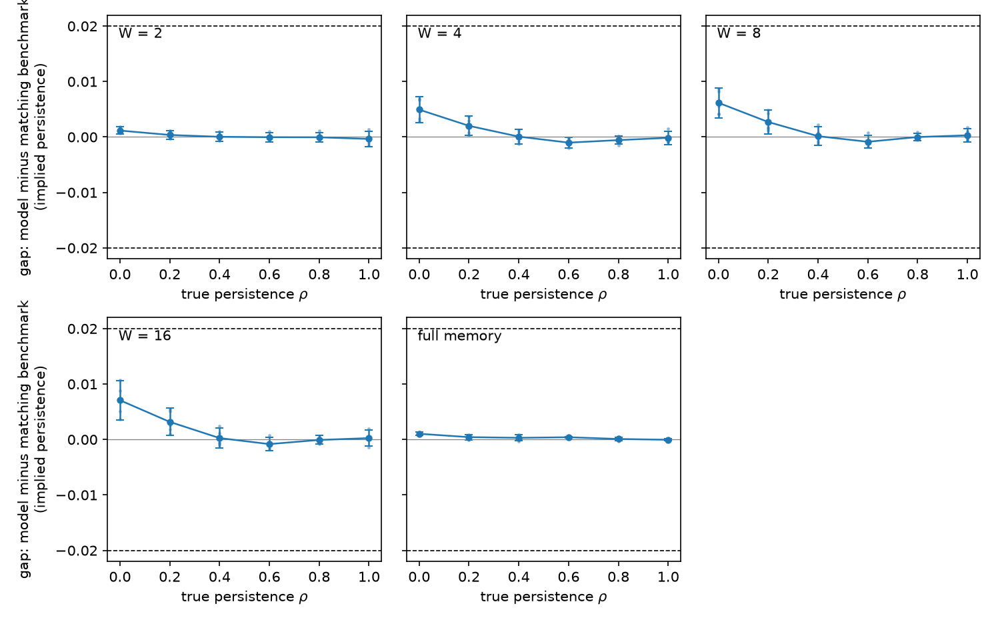
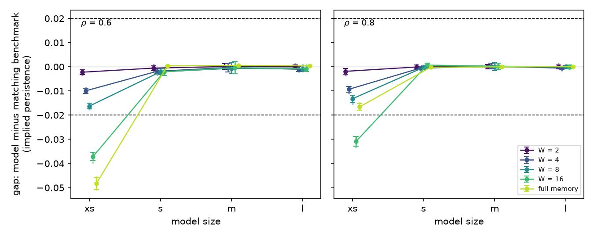
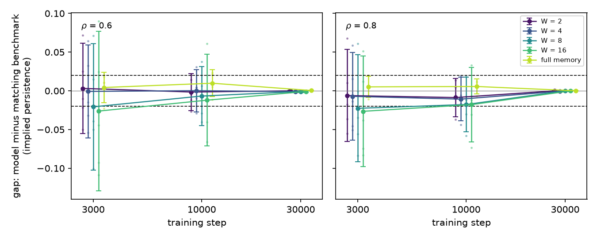
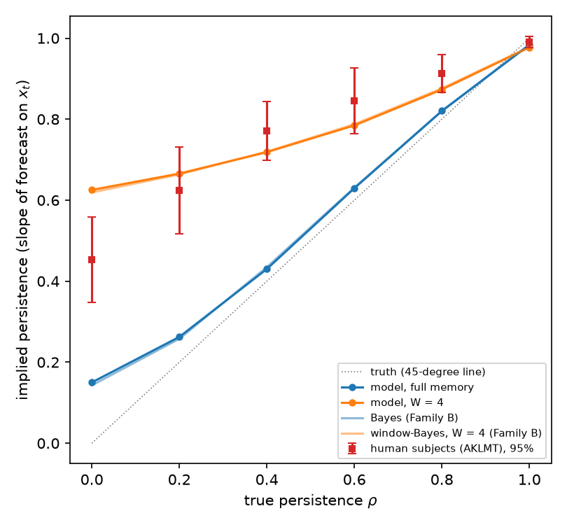

Small transformers trained only to minimise forecast error on autoregressive data, measured against exact Bayes forecasters that see exactly what the network sees.
AbstractIn forecasting experiments on AR(1) series, people overreact to news, and more so when the series is less persistent. A rational forecaster who has to learn persistence also departs from the truth at any fixed persistence, because its estimate is pulled toward the prior. So a deviation from the full-information forecast is not evidence of a bias. We train causal transformers from scratch on AR(1) sequences with persistence drawn from U[0, 1], at four sizes and five memory lengths, and compare each with the exact Bayes forecaster that holds the same prior and the same window of data. Hypotheses, margins and decision rules were frozen in a tagged pre-registration before any confirmatory run. The largest model with full memory is equivalent to Bayes on all 12 pre-registered verdicts. With its memory cut to 2, 4, 8 or 16 observations it is equivalent to window-Bayes on all 12 verdicts at every window, so what it gets wrong relative to full Bayes is accounted for, within the margins, by the information it lacks. In none of the 8 window-persistence combinations tested does it overreact where window-Bayes underreacts, at 95% or after adjustment; no mean gap there is above zero. These verdicts hold at the last checkpoint, after the learning rate has decayed to zero; at 10,000 of 30,000 steps the windowed models are not yet equivalent. The Bayes forecast is the squared-error optimum, so this is a result about training: by the end of its schedule this network has reached the information-limited Bayesian forecast, with no residual in the human direction.
When a network trained on nothing but squared error forecasts a time series, is what it gets wrong a bias, or only the information it lacks? Here the right answer is known exactly, so the two can be told apart.
Four terms recur. Implied persistence is the slope of a forecast on the current value. The gap is the model's implied persistence minus its benchmark's. Excess error is the model's squared error relative to the benchmark's, in percentage points. Window-Bayes is the exact Bayes forecaster given only the last W observations.
| Stream | Data | Grade | Supports |
|---|---|---|---|
| H1–H3 | Simulated AR(1), Family A; size l, 5 seeds per cell | Confirmatory: pre-registered rows, margins and rules (tag prereg-v1, deviations to v1.4) | Findings 1–3 |
| Other sizes | Family A, sizes xs, s (5 seeds), m (3 seeds) | Reported in the same tables; never enter a decision | Finding 4 |
| Training traces | Checkpoints at 3,000, 10,000 and 30,000 steps | Exploratory | Finding 4 |
| Human overlay | Family B (unknown mean and scale), size l, windows full and 4, 3 seeds; Afrouzi et al. (2023), Experiment 1 | Descriptive; different data for humans and models | Finding 5 |
| Survey comparison | SPF and real-time data, Philadelphia Fed | Illustrative, frozen at tag prereg-v1.3; the models never saw real series, and real series are not AR(1) | Section 09 |
Afrouzi, Kwon, Landier, Ma and Thesmar (2023; AKLMT below) showed people AR(1) series with persistence ρ fixed per subject and asked for forecasts. Regressing a forecast on the current value gives an implied persistence: above ρ, the forecast moves too much with the latest value (overreaction); below ρ, too little (underreaction). People's implied persistence sits above ρ for every ρ below one, by more when ρ is low: they overreact, and overreact most to the least persistent series.
A forecaster who does not know ρ and learns it from the data is unbiased only on average over its prior. At any fixed ρ its posterior is pulled toward the prior, so its implied persistence is above ρ when ρ is low and below it when ρ is high. Part of the human pattern, "more overreaction when persistence is low", is therefore what a rational learner does anyway. A forecaster that sees only the last W observations is pulled harder, because it has less data. The informative comparison is not with the truth but with the Bayes forecaster that holds the same prior and the same information. With the mean and scale known (Family A below), implied persistence at ρ = 0 is 0.12 for Bayes and 0.38 for a Bayesian with four observations; at ρ = 0.8 it is 0.80 and 0.72. The place to look for something rational learning does not explain is therefore high persistence: there the windowed Bayesian underreacts against the truth, while people in the experiment still overreact against it (0.91 at ρ = 0.8).
That gives the sharp question. Does a network trained only on squared error ever overreact where the matching Bayesian underreacts, at ρ = 0.6 and 0.8? Rational learning under the same prior cannot produce that.
One point of theory fixes what the experiment can show. The forecast that minimises expected squared error, given the last W observations and the time index, is the posterior mean under the training prior: window-Bayes. A network that optimised perfectly would match it by construction. H1 and H2 therefore test whether a finite network trained by stochastic gradient descent reaches that optimum, and H3 tests whether architecture or optimisation leaves a residual in the human direction. The question is empirical because nothing guarantees that training gets there; the smallest model and the earlier checkpoints show that it need not.
Family A (every hypothesis): x0 = 0, xt = ρ xt−1 + εt, εt ~ N(0, 1), with ρ ~ U[0, 1] drawn once per sequence. Mean and noise scale are known. Family B (descriptive): the same process around an unknown mean μ with unknown scale σ, σ² ~ InvGamma(3, 2) and μ | σ² ~ N(0, 25σ²). Sequences run 80 steps; forecasts are scored at steps 41–80, as AKLMT scored their subjects, for horizons 1 to 6. Every run is evaluated on the same fixed sets: 20,000 sequences at each grid value ρ ∈ {0, 0.2, 0.4, 0.6, 0.8, 1}, and 100,000 with ρ drawn from the prior (the "prior set").
Pre-LayerNorm causal transformers over real-valued inputs, at four sizes: xs (1 layer, width 32), s (2, 64), m (4, 128) and l (8, 256). Each position embeds [x, asinh x] and its true time index. The output head gives, per horizon, a slope and an intercept, and the forecast is ah·xt + bh. A memory length W ∈ {2, 4, 8, 16, full} is a hard information limit: the input is cut to the last W observations, so a deep network cannot see further back than W. AdamW, learning rate 10−3 with 500 warm-up steps and a cosine decay to zero, batch 1,024, 30,000 steps.
Full information: ρhxt with the true ρ. Bayes: the posterior over ρ from a 2,001-point grid under the training prior, forecast E[ρh | data]·xt. Window-Bayes: the same from the last W observations and the time index, including the likelihood of the first observation in the window given (ρ, t); it minimises expected squared error under the training prior, so no forecaster with that information can do better on that measure. A least-squares learner is reported in RESULTS.md only.
The pre-registration is a document in the project repository (docs/PREREG.md), frozen by git tag prereg-v1 on 17 November 2026. It was not lodged with an independent registry. The repository holds the tags, the deviation log, the code and every verdict with its seed values (RESULTS.md): github.com/ajaiupadhyaya/rational-transformer. The repository and its tags were made public on 20 November 2026, after every run had finished, so the tag dates are the author's record, not an independent timestamp.
Seeds are the unit. For each cell the seed mean gets a 95% Student-t interval. All seeds are scored on the same evaluation sets, so the interval measures variation across training runs only; sampling error in the evaluation sets is common to every seed and is not in it. Model and benchmark are compared on the same sequences and the sets were sized to keep that error small against the margins, but it is not quantified here. A model is equivalent to its benchmark if the whole interval lies inside a margin fixed in advance: ±1 percentage point of excess squared error and ±0.02 of implied-persistence gap. For scale, people's implied persistence in the experiment exceeds ρ by 0.11 to 0.45 for ρ up to 0.8, and window-Bayes differs from full Bayes by up to 0.31. It is different if the interval lies wholly outside, and inconclusive otherwise.
Any "different" finding at the largest size was to be re-trained at twice the length and counted only if it survived. The first draft used a plateau test on the learning curve instead. Under a learning rate that decays to zero it would have marked nearly every run unconverged, and it was replaced before the freeze.
All 96 planned runs finished their 30,000 steps; 29 further runs were dropped by design under the budget deviation, before any confirmatory run. Every number below is read from the pre-registered rows at horizon 1, step 30,000, size l, five seeds. Excess error is in percentage points of the benchmark's squared error (margin ±1); the gap is the model's implied persistence minus the benchmark's (margin ±0.02). A printed −0.0000 is a negative value smaller than 0.00005 in size.
Supported. All 12 verdicts are "equivalent". The intervals are one to two orders of magnitude inside the margins: no excess-error interval reaches 0.04 points and no gap interval reaches 0.0014.
| ρ | Excess error, points: mean [95%] | Gap: mean [95%] | Verdicts |
|---|---|---|---|
| 0.0 | +0.028 [+0.022, +0.035] | +0.0010 [+0.0007, +0.0013] | equivalent, equivalent |
| 0.2 | −0.004 [−0.012, +0.004] | +0.0004 [−0.0001, +0.0009] | equivalent, equivalent |
| 0.4 | +0.010 [+0.005, +0.014] | +0.0003 [−0.0002, +0.0008] | equivalent, equivalent |
| 0.6 | −0.002 [−0.012, +0.008] | +0.0004 [+0.0003, +0.0006] | equivalent, equivalent |
| 0.8 | −0.003 [−0.006, −0.001] | +0.0001 [−0.0002, +0.0004] | equivalent, equivalent |
| 1.0 | +0.012 [−0.013, +0.037] | −0.0000 [−0.0002, +0.0001] | equivalent, equivalent |
Rational given its information, at every window. For each W, all 12 verdicts are "equivalent", so the part of the forecast that departs from full Bayes is accounted for by the window. The largest deviations sit at ρ = 0, where the network's implied persistence is above window-Bayes by 0.001 to 0.007, more for longer windows; the far end of the widest interval, 0.011 at W = 16, is about half the margin. At ρ = 0 the gap interval excludes zero at every memory length, full memory included: the network overstates persistence there by a small, systematic amount. Equivalent means inside the margin, not identical.
| W | Equivalent, of 12 | Widest excess-error interval end | Widest gap interval end | Decision |
|---|---|---|---|---|
| 2 | 12 | +0.305 (ρ = 1.0) | +0.0018 (ρ = 0.0) | rational given its information |
| 4 | 12 | +0.386 (ρ = 0.0) | +0.0073 (ρ = 0.0) | rational given its information |
| 8 | 12 | +0.402 (ρ = 0.0) | +0.0089 (ρ = 0.0) | rational given its information |
| 16 | 12 | +0.424 (ρ = 0.0) | +0.0106 (ρ = 0.0) | rational given its information |

Not supported. 0 of 8 combinations are positive at 95%, and none after the Bonferroni adjustment. No mean gap is above zero; the eight lie between −0.0010 and zero, and seven of the eight intervals include zero. Nothing here points in the human direction. The null is tight: the upper end of every 95% interval is at or below +0.0008, so an overreaction beyond window-Bayes of more than about a thousandth in slope is excluded at that level, against a threshold of +0.02. It is a null for one architecture, at one training length, on simulated AR(1) data.
| W | ρ | Mean gap | Lower end, 95% | Lower end, adjusted | Positive |
|---|---|---|---|---|---|
| 2 | 0.6 | −0.0000 | −0.0009 | −0.0016 | no |
| 2 | 0.8 | −0.0001 | −0.0009 | −0.0016 | no |
| 4 | 0.6 | −0.0010 | −0.0020 | −0.0029 | no |
| 4 | 0.8 | −0.0006 | −0.0013 | −0.0020 | no |
| 8 | 0.6 | −0.0009 | −0.0020 | −0.0031 | no |
| 8 | 0.8 | −0.0000 | −0.0006 | −0.0012 | no |
| 16 | 0.6 | −0.0008 | −0.0020 | −0.0031 | no |
| 16 | 0.8 | −0.0001 | −0.0009 | −0.0016 | no |
No size-l verdict was "different" and no H3 combination was positive, so nothing was flagged and the pre-registered re-train at 60,000 steps was not needed.
Nothing in this section enters a decision.
The same verdicts at the smaller sizes, counted out of 12 per window (horizon 1, step 30,000; window-Bayes for W below full, Bayes for full memory):
| Size | Seeds | W = 2 | 4 | 8 | 16 | full |
|---|---|---|---|---|---|---|
| xs (1 / 32) | 5 | 11 (1 inc.) | 7 (3 diff., 2 inc.) | 7 (5 diff.) | 4 (8 diff.) | 4 (6 diff., 2 inc.) |
| s (2 / 64) | 5 | 12 | 12 | 12 | 12 | 12 |
| m (4 / 128) | 3 | 12 | 12 | 12 | 12 | 12 |
| l (8 / 256) | 5 | 12 | 12 | 12 | 12 | 12 |
Sizes s and m are also equivalent to their benchmarks on all 60 verdicts each (size m on three seeds, so its intervals use t with 2 degrees of freedom). The smallest model is the exception, and its departures have a shape: it pulls low-persistence series up and mid-persistence series down, toward a middling persistence. With full memory its implied persistence is above Bayes by +0.16 at ρ = 0 and below it by −0.05 at ρ = 0.6. The departures are largest at W = 16 and full memory (8 and 6 "different" verdicts) and nearly vanish at W = 2 (one inconclusive verdict), where the window, not the network, is the binding limit. Below the benchmark at ρ = 0.6–0.8 is underreaction, the opposite of the human signature. On the H3 rows, 0 of the 24 combinations at sizes xs, s and m are positive at 95%.

Equivalence arrives late. At 3,000 and 10,000 steps the size-l windowed models are equivalent on at most 2 of 12 verdicts per window, with excess errors of up to 11 points; at 30,000 steps, the end of a learning-rate schedule that decays to zero, they are equivalent on all 12. The full-memory model is equivalent on 6 of 12 at both earlier checkpoints. The traces show no overreacting phase at high persistence, though they cannot rule one out: at ρ = 0.6 and 0.8 the windowed mean gaps are negative in 7 of 8 combinations at each earlier checkpoint (−0.026 to +0.003 at 3,000 steps, −0.018 to +0.0002 at 10,000), with intervals wide enough that every one is inconclusive; the full-memory gaps are slightly positive (+0.004 to +0.010), with intervals that include zero. The printed plateau rule (error at 30,000 steps within 0.1% of 10,000) is met by 4 of the 25 size-l runs. It cannot separate under-training from bias when the learning rate decays to zero. That is why it was demoted to a printed column before the freeze; it changes no verdict.

At horizons 2 to 6, size l is equivalent to its benchmark on all 300 verdicts (5 windows × 5 horizons × 12). The largest mean gap is 0.0034 and the largest mean excess error 0.22 points.

The Family B networks sit on their benchmarks: every mean gap is within ±0.0073, and 27 of 28 verdicts against the matching benchmark are equivalent (six grid ρ and the prior set, two measures, two windows; the exception is excess error at W = 4 and ρ = 1, +1.38 points, a "different" verdict on three seeds). The four-observation network overreacts strongly against the truth (implied persistence 0.625 at ρ = 0) but, within the margin, no more than a Bayesian with four observations does. People sit between the two curves at ρ = 0 and 0.2. At ρ = 0.4, 0.6 and 0.8 their point estimates (0.77, 0.85, 0.91) are above even the four-observation curve (0.72, 0.79, 0.87), the region where H3 looked for a network doing the same; each of those human intervals still includes the four-observation curve, and at ρ = 0 people are below it (0.45, interval 0.35 to 0.56, against 0.62).
The overlay does not show that people overreact beyond an information-limited Bayesian. With the mean and scale unknown, the Family B benchmarks are themselves above the truth at ρ = 0.6 and 0.8 (Bayes 0.63 and 0.82; four observations 0.79 and 0.88), so the premise of H3, a matched Bayesian that underreacts there, belongs to Family A and does not carry over. W = 4 was fixed by the budget deviation, not fitted to people. What the overlay does show is that a Bayesian with a short window and an unknown mean reproduces the direction of the human curve, and from ρ = 0.2 upward the human intervals include it.
The overlay compares curves, not data: people forecast AKLMT's series, the networks forecast simulated Family B series. Implied persistence is a slope and does not change when a series is rescaled, so the comparison survives the difference in units. AKLMT's innovations have a standard deviation of about 20 in raw units, far outside the Family B prior for σ; that matters only for feeding raw human series to the networks, which this report does not do.
Real-time SPF histories were fed to the Family B size-l networks, which never saw real data, and the error-on-revision slope b of their forecasts (Coibion and Gorodnichenko 2015; Bordalo, Gennaioli, Ma and Shleifer 2020) was set beside the b of the survey's consensus forecast on the same variable-quarters (strict real-time sample; three seeds per cell). A positive b means forecast errors follow revisions, which is underreaction; a negative b means overreaction.
| Variable | Survey b | Model b, full memory: mean [seed values] | Model b, W = 4: mean [seed values] | Quarters |
|---|---|---|---|---|
| NGDP | +0.56 | +0.57 [+0.70, +0.63, +0.38] | −0.27 [−0.28, −0.27, −0.27] | 185 |
| RGDP | +0.58 | −0.13 [−0.15, −0.05, −0.19] | −0.11 [−0.12, −0.10, −0.11] | 185 |
| PGDP | +1.52 | −0.02 [−0.01, −0.00, −0.04] | +0.12 [+0.09, +0.13, +0.13] | 185 |
| CPI | +0.27 | −0.57 [−0.56, −0.56, −0.60] | −0.55 [−0.56, −0.55, −0.55] | 89 |
| UNEMP | +0.82 | −0.20 [−0.19, −0.20, −0.20] | −0.06 [−0.06, −0.06, −0.06] | 187 |
| TB3M | +0.60 | omitted | −0.14 [−0.16, −0.16, −0.11] | 141 |
| TN10Y | −0.02 | −0.24 [−0.24, −0.24, −0.24] | −0.29 [−0.29, −0.29, −0.29] | 99 |
The networks match the survey in sign and size only for nominal GDP with full memory. Elsewhere the survey's b is positive (six of seven variables) while the networks' is mostly negative. Two things could produce that without any bias. Real series are not draws from the training prior. And the survey b is a consensus coefficient, which is positive under dispersed information even when each forecaster is rational, while each network is a single forecaster. Nothing here separates the two. The table says nothing about professional forecasters, and one match among 13 cells should not be read as one. One cell was dropped under the frozen rule: the 3-month bill with full memory had 55% of its variable-quarters outside the Family B range, against a limit of 20%.
Transformers trained across many linear systems approach Kalman accuracy in squared error (Balim, Du, Oymak and Ozay 2023; Akram and Vikalo 2024), and one analysis argues attention fits a fixed-window autoregression rather than recovering the system (Vladarean, Zhang and Sra, ICLR 2026). Raventós, Paul, Chen and Ganguli (2023) find networks behave like the Bayes estimator for their pretraining prior in i.i.d. regression below a task-diversity threshold, and like the estimator for the underlying continuous prior above it. Here ρ is drawn afresh for every training sequence, the high-diversity case, so their result leads one to expect H1. The closest design is Acero (ICAIF 2026), who trains GPT-style models on a limit-order-book simulator and finds the learned predictive matches exact Bayes in log loss; it does not measure forecast slopes or revisions, and has no information-matched benchmark or sweep over context length. On the expectations side, Frank, Gao and Yang (2023) show that optimally regularised forecasters fail forecast-efficiency tests against full information; this report makes the comparison against a Bayesian with the same information exact. Pretrained language models given AKLMT-style series extrapolate, and fine-tuning them on rational forecasts reduces it (Gao, Jiang and Yan 2026); a broad battery of human-bias experiments finds that larger language models often answer belief tasks rationally (Bini, Cong, Huang and Jin 2026). Both measure against full information rather than an information-matched Bayesian, and neither trains a network from scratch. Matching the optimal filter in squared error is established, and H1 adds little to it. What this report adds is the combination: the slope diagnostics of the expectations literature, measured in excess of an exact Bayes forecaster with the same information, across memory lengths, under rules fixed in advance. A search made before the freeze (docs/novelty_check.md) found no paper that does this; it could not query OpenReview, Google Scholar or SSRN directly.